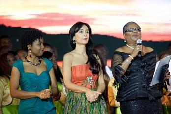

About AMEMUSO
Under the leadership of Mrs. Maria Cecilia Toledo, the Abuja Metropolitan Music Society (AMEMUSO) was established in 2006 to provide an avenue for Nigerians, especially children to develop their carieers as singers, voilinists, pianists and learn about every other aspect and discipline that has to do with music.
Abuja Metropolitan Music Society, is passionately committed to inspiring and enlightening audience with some of the most commanding voices in music. The ensemble has experience performing at numerous venues and events within Nigeria and international bodies. They are driven by the desire to attain international standards and believe strongly that their example will drive the interest to build a music school for talented Nigerians in Abuja. Due to their brilliant performance and increasing vocal levels, they have received invitations to perform in the USA and Germany.
Mrs Maria Cecilia Toledo de Schmillen, founder and artistic director, together with Mr. Samuel Ezugwu(Music Director), Mr. Abednego Okafor (official Pianist) and Mr James Agahyande (Secretary), lead the formation of the Abuja Metroplitan Music Society (AMEMUSO Choir) and AMEMUSO children choir (AMEMUSITO - directed by Joshua Opara), the end result isthe renowned annual performance of a Nigerian first - Operabuja.
After the success of the 2007 edition of Operabuja an in recognition of the Choir ́s dedication, the FCT Minister donated a plot of land to AMEMUSO for the purpose of making their dream of a music complex in Abuja a dream come true. In October 2008, the Choir received training for two weeks from a German Master in vocal training, Mrs. Carmen Maria Anhorn. The AMEMUSO Master classes in 2008 were made possible through the support of the German Embassy and Lufthansa Airline. Abuja Metropolitan Music Society embodies the choir spirit, and invites musical talented individuals on their vibrant musical journey. Contact the choir for more information